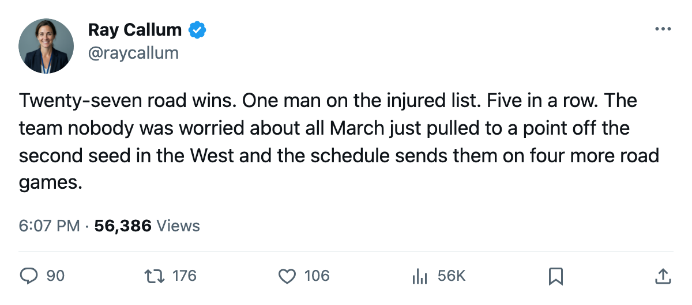

Notes from the West: Colorado is 27-10 on the road and on its 5th straight win
The Avalanche have more wins away from home than any club outside Toronto, and the streak that built that record is still running.
 Ray CallumSenior correspondent · Home Ice Network
Ray CallumSenior correspondent · Home Ice Network Colorado Avalanche beat Chicago 4-2 on March 22 for their 5th consecutive win. The 29 shots on goal against the 17 of Chicago tell you the shape of the game. Colorado leads the Western Conference at 101 points with 8 games remaining, 3 ahead of Dallas and 4 ahead of Nashville.
Colorado Avalanche beat Chicago 4-2 on March 22 for their 5th consecutive win. The 29 shots on goal against the 17 of Chicago tell you the shape of the game. Colorado leads the Western Conference at 101 points with 8 games remaining, 3 ahead of Dallas and 4 ahead of Nashville.
The road record is what stands out: 27 wins, 10 losses. That is second in the league behind Toronto's 29-9. Colorado has more victories on other clubs' ice than on their own; their home record is 21-16. The 6-win gap between home and road is the widest split in the league among clubs above .500.
Colorado's 5-game winning streak has produced 35 goals for and 23 against across the last 10 games. The streak includes wins over San Jose, Dallas, Edmonton, and the most recent over Chicago. They are 12-1-1-2 in divisional play this season: 12 regulation wins, 1 overtime win, 1 regulation loss, 2 overtime losses.
The health advantage
The Colorado Avalanche have 1 player on the injured list:  Dan Hinote78, ankle, return April 15. The next healthiest club in the Western Conference is Minnesota with 2. Colorado's 39 injury spells this season are the fewest in the West and the third-fewest in the league, behind only New Jersey (48) and Toronto (64), which have played more games. The 120 days lost to those 39 spells is the lowest total in the Western Conference.
Dan Hinote78, ankle, return April 15. The next healthiest club in the Western Conference is Minnesota with 2. Colorado's 39 injury spells this season are the fewest in the West and the third-fewest in the league, behind only New Jersey (48) and Toronto (64), which have played more games. The 120 days lost to those 39 spells is the lowest total in the Western Conference.
 Jamie Storr84 has started 62 of 74 games, an 84 percent share.
Jamie Storr84 has started 62 of 74 games, an 84 percent share.  Philippe Sauve80 was in the G1 slot before the March 22 lineup change moved Storr in. Colorado carries only 2 dressed goaltenders on most nights.
Philippe Sauve80 was in the G1 slot before the March 22 lineup change moved Storr in. Colorado carries only 2 dressed goaltenders on most nights.
Tonight Colorado plays at Ottawa, the only meeting of the season. Colorado won it 5-1 on the road. Ottawa is 14th in the Eastern Conference at 69 points with a 18-20 home record. Colorado is 27-10 everywhere else.
The 8 games remaining are: Ottawa (away), Los Angeles (away), Phoenix (away), St. Louis (away), and 4 others. Four of the eight are on the road, which means the 27-10 gets tested one more time before the regular season ends. The Presidents' Trophy conversation is over, Toronto owns it at 124. But the 1st seed in the Western Conference, worth home ice through the second round, is Colorado's to keep or give back. They lead Dallas by 1 point and play each other once more before April.
